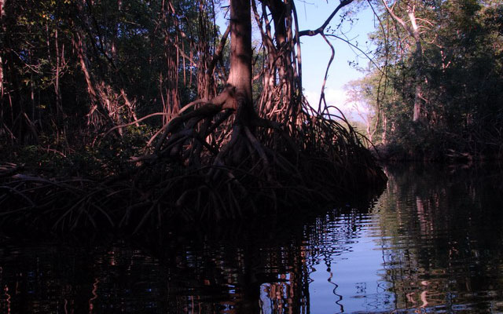
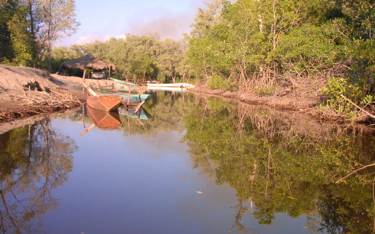
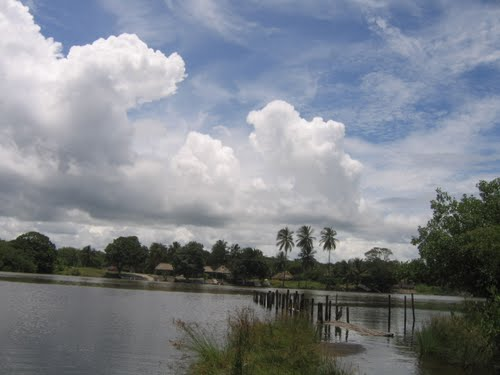
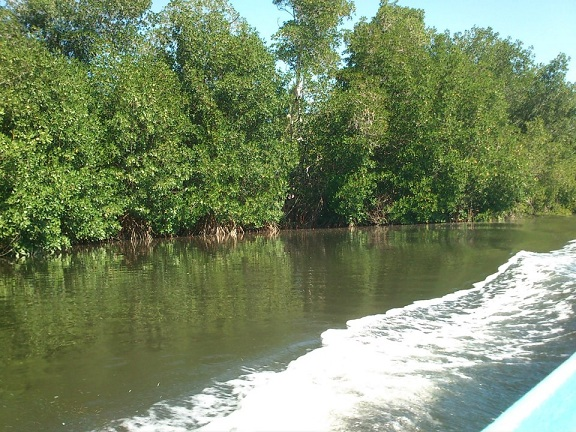
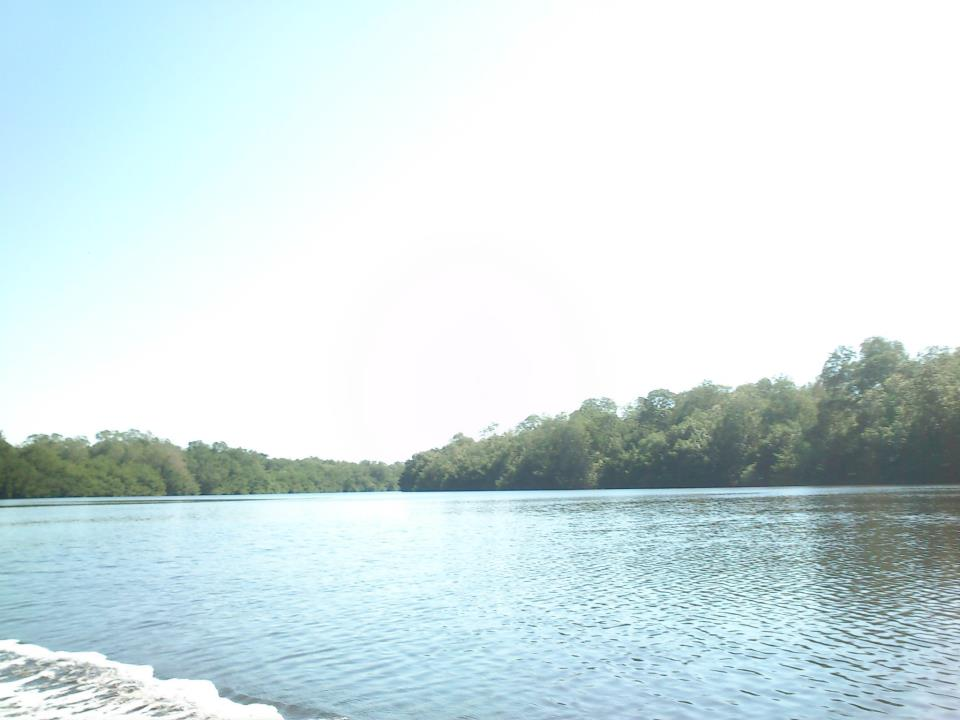
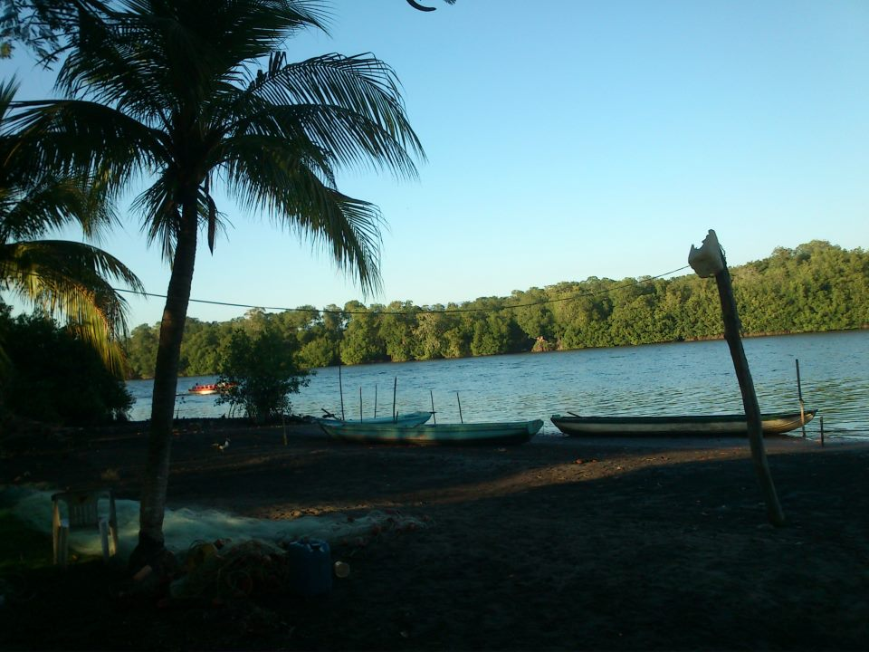

Palo Blanco tiene un faro como símbolo representativo, aquí convergen dos brazos de río, por lo que el estero es de agua dulce. A sus alrededores del estero hay manglares y existe una franja de arena fina que divide el agua dulce del mar.
Estas playas son vírgenes, por lo que podrá admirar algunos animales en completa libertad.
Se localiza a 75 Kilómetros de Tonalá
Partiendo de Tonalá ( primera opción):
Usted tomara la carretera Tonalá-Pijijiapan hasta llegar a la cabecera municipal – seguido tomara un desvío hacia Palo Blanco.
Partiendo de Tonalá – Pijijiapan ( ruta sugerida):
Saliendo de Tonalá (centro) siga hacia la salida al Libramiento por la carretera 200 – siga la carretera Juchitán de Zaragoza-Tapachula – siga en esa dirección – hasta llegar a Pijijiapan. Llegando a Pijijiapan diríjase hacia el Sur hacia la localidad de San Juan - siga a la derecha – hasta topar con un desvío y tome el camino a la izquierda – siga en ese camino sin doblar hasta llegar a la localidad Topón - saliendo de la localidad diríjase camino hacia el embarcadero – hasta llegar a Estero Palo Blanco.
Usted podrá realizar grandiosas actividades vinculadas con el ambiente natural como:
• Nado en el estero y en el mar (sólo si es experto).
• Pesca recreativa
• Recorridos en lancha
• Campismo y senderismo
• Deportes playeros (fútbol y voleibol)
• Observación de flora y fauna.






posicione el mouse sobre las imágenes